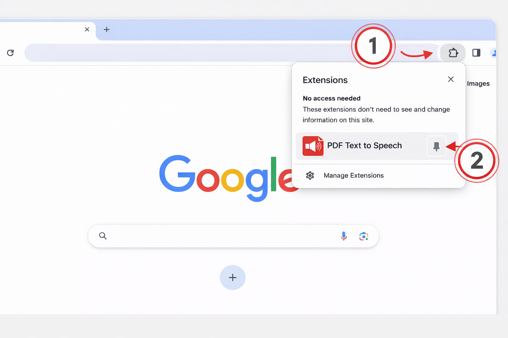
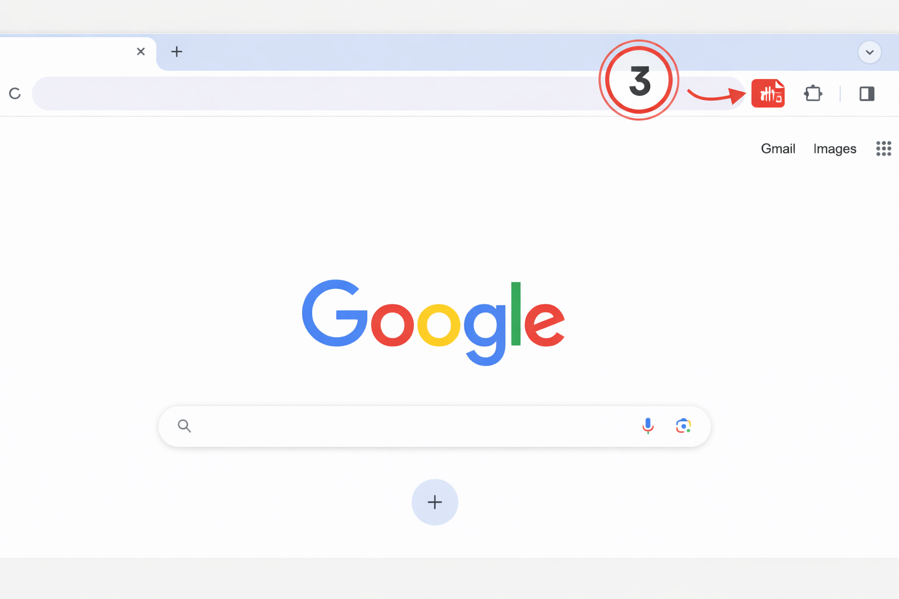

PDF Text to Speech
Pin the extension to keep it one click away.
Click the extensions icon marked as 1, find PDF Text to Speech, and pin it with the icon marked as 2.

Use the extension right from your browser toolbar.
Once pinned, the extension stays visible in your browser, marked as 3 in the image below.

Privacy notice: to generate audio, the extension sends extracted PDF text to pdftext2speech.com, which processes speech generation with OpenAI. Usage limits and purchases are tracked with a device token.